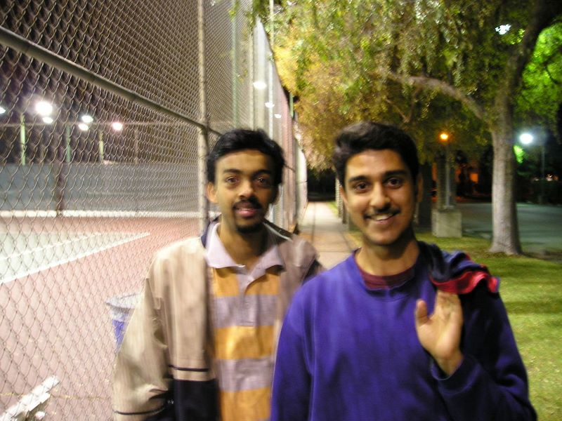

Caltech Memories -- This is one of the earliest photos I took with my then-new now-long-lost camera. I used to have a silly French beard back then! Shaunak(right) and I(left) next to the Caltech Tennis Courts (Nov 2003)
First |
Previous Picture |
Next Picture |
Last | Thumbnails
